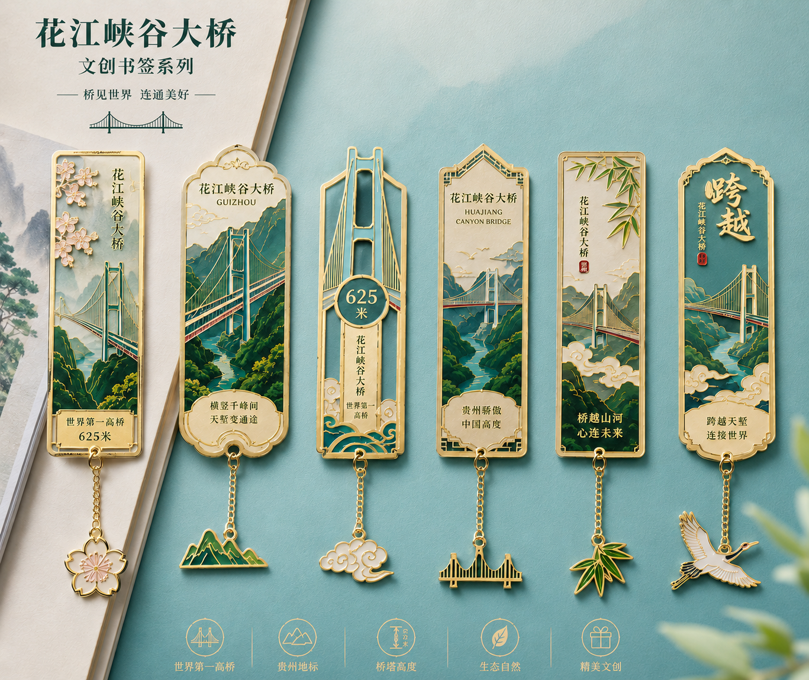

HUAIJIANG GORGE BRIDGE
花江峡谷大桥
文创产品设计方案
18 个产品品类
旅游纪念
日用零售
礼赠收藏
版权所有：元·设计集
01 / 方案结构
以桥梁地标为核心，形成可展示、可售卖、可传播的产品矩阵。
本次方案围绕花江峡谷大桥的桥塔造型、峡谷景观、625 米高度记忆点和“桥见世界， 连通美好”的传播语境，延展出 18 个文创产品品类。
- 纪念收藏：冰箱贴、书签、钥匙扣、行李牌、贴纸。
- 日常使用：杯垫、签字笔、尺子、回形针、手机支架。
- 户外旅行：折叠伞、冰袖、瓶装水挂绳、环保袋。
- 礼赠陈列：毛绒玩偶、折扇、勺子、临停电话号码牌。
02 / 产品总览
18 个品类一览
感谢观看
以花江峡谷大桥桥塔造型、峡谷山水、625 米高度记忆点为核心视觉资产，
延展形成 18 个文创产品品类，覆盖旅游纪念、日用零售、户外旅行与礼赠收藏等场景。
让花江峡谷大桥进入到公众的日常里。
版权所有：元·设计集